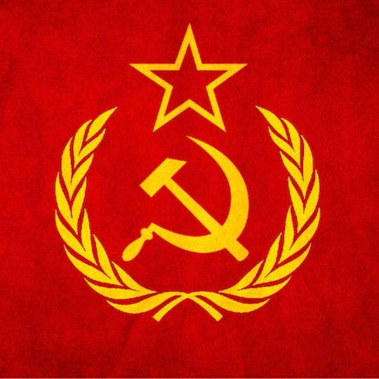
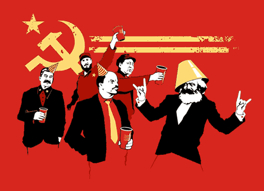

It abolishes property in land and application of all rents of land, and also abolishes the right of inheritance.
It gives you a very heavy progressive or graduated income tax.
It provides education for all children in public schools and completely abolishes children's factory labor and education with
industrial production.
It provides equal liability of all to labor. Establishment of industrial armies especially for agriculture.
It states that the centralization of credit is in the hands of the state. It would own a national bank with state capital and
an exclusive monopoly.
It states that the government would have control over communication, transportation and means of production

Here are 10 random interesting facts about Communism
The word 'communism' is derived from the French word 'communisme' which originally was used to describe social situations as opposed to
political or economic states.
7 out of 10 Americans either don’t know the definition of Communism or misidentify it.
Communism has murdered more innocent people than any other belief system in the history of man combined.
Communism is the natural progression of socialism. Socialism must, by its very nature, continue to exude more power over individual lives in
order to support its systems of control particularly with other people's money.
Many concepts of communism were included in Greek philosopher Plato's Republic.
The Chinese government has been under fire for years for human rights violations. This included many executions, detaining prisoners without
trial, and wide ranging censorship.
Karl Marks, the founder of Communism died broke, and only 11 people attended his funeral.
56% of all Russians actually regret the collapse of the Societ Union.
The most successful unions in the US were often communist led. This is because they were among the few that would recruit and represent people
of color.
Vladimir Lenin was the leader of the Bolshevik Party who applied communism in Russia. The present government was overthrown by Lenin during the
October revolution in 1917.

Here is a video with more interesting facts about this ideology: